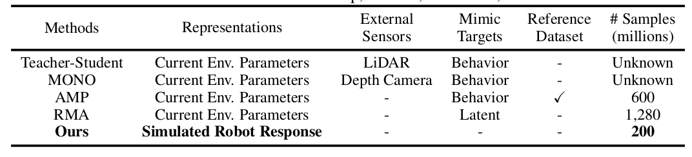
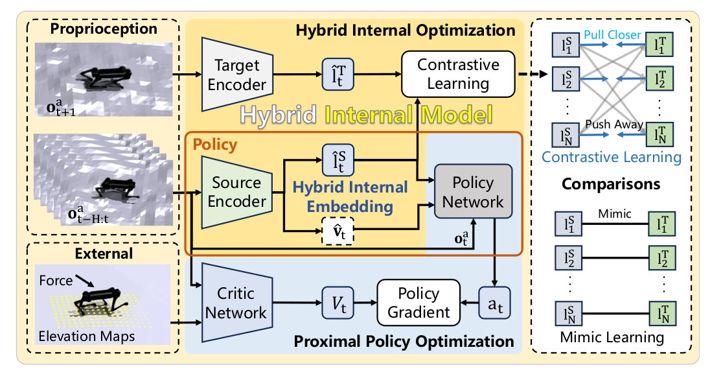
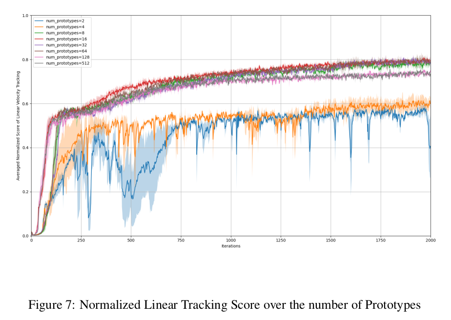
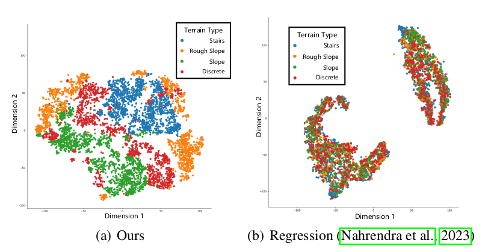

Learning robust locomotion by modeling the robot’s response via contrastive learning
본 포스트는 HIMLoco 논문 중 Estimator Network의 구조와 학습 방법론(HIO)을 중점적으로 분석합니다.
1 1. 배경 및 문제 정의

기존의 Model-based RL이나 DreamWaQ와 같은 연구들은 World Model이나 Representation을 학습하기 위해 주로 회귀(Regression) 목적함수를 사용했습니다. 즉, 신경망이 다음 상태(Next State)나 환경 파라미터(마찰계수, 지형 높이 등)를 직접 예측하도록 학습시킵니다.
그러나 이러한 접근 방식은 Sim-to-Real을 위해 필수적인 도메인 랜덤화(Domain Randomization) 과정에서 아래와 같은 단점이 있습니다.
- 불확실성의 증대: 시뮬레이션에 추가된 과도한 무작위 노이즈까지 신경망이 학습해야 합니다.
- 표현 붕괴 (Representation Collapse): 신경망이 물리적으로 유의미한 정보(Dynamics)가 아니라, 무작위 노이즈 패턴에 과적합되면서 실제 환경에서는 엉뚱한 추정값을 내놓는 현상이 발생합니다.
HIMLoco의 접근:
“Regression 대신 상황의 맥락(Context)을 구별(Contrastive)”
2 2. HIMLoco 개요
HIMLoco는 고전 제어 이론인 IMC (Internal Model Control)에서 영감을 받아, 외부 환경 변수 자체가 아니라 이에 대한 로봇의 반응(Response)을 나타내는 Hybrid Internal Embedding을 학습합니다.
핵심은 대조 학습(Contrastive Learning)을 통해 Latent Vector를 생성한다는 점입니다. - Positive Pairs: 시계열적으로 연관된 과거와 미래 데이터는 잠재 공간에서 가깝게 위치시킵니다. - Negative Pairs: 서로 다른 맥락의 데이터는 멀리 위치시킵니다.
이 방식은 개별 샘플의 수치적 노이즈보다는 샘플 간의 상대적인 관계에 집중하기 때문에 노이즈에 강건하며, Batch-level 정보를 활용하여 훨씬 견고한 표현(Representation)을 학습할 수 있습니다.
3 3. Estimator Network 구조

Estimator Network는 과거의 관측 기록을 통해 현재의 상태를 추론하는 핵심 모듈입니다.
3.1 3.1 Source Encoder
- 역할: 과거의 관측 기록(\(o_{t-H:t}\))을 입력받아 두 가지 정보를 출력합니다.
- 명시적 속도 (\(\hat{v}_t\)): 로봇의 선속도 추정값 (Supervised Learning 대상)
- 잠재 벡터 (\(l_t^{source}\)): 지형 및 상태 맥락 정보 (Self-Supervised Learning 대상)
- 차원: Input(270) \(\rightarrow\) Output(19: 속도 3 + Latent 16)
- 특징: 지도 학습과 자기 지도 학습을 동시에 수행하는 Hybrid 구조입니다.
3.2 3.2 Target Encoder
- 역할: 미래의 관측값(\(o_{t+1}\))을 입력받아 Target Latent (\(l_t^{target}\))를 생성합니다.
- 차원: Input(45) \(\rightarrow\) Output(16)
- 의미: 미래 시점의 상태가 과거 기록이 예측해야 할 지향점(Target) 역할을 합니다.
3.3 3.3 Prototypes
- 역할: 잠재 공간 내에서 군집의 중심(Cluster Centroids) 역할을 하는 학습 가능한 벡터 집합입니다.
- 구조: \(32 \times 16\) 크기의 행렬 (32개의 프로토타입, 각 16차원).
- 학습: 역전파를 통해 데이터의 분포에 맞춰 이 프로토타입 벡터들의 위치도 지속적으로 업데이트됩니다.

4 4. 학습 과정: Hybrid Internal Optimization (HIO)
Estimator의 최종 손실 함수는 다음과 같이 정의됩니다.
\[ \mathcal{L}_{total} = w_{vel} \cdot \mathcal{L}_{vel} + w_{con} \cdot \mathcal{L}_{con} \]
여기서 첫 번째 항은 속도 추정에 대한 MSE Loss이며, 핵심이 되는 두 번째 항 \(\mathcal{L}_{con}\)은 Swapped Prediction Loss를 사용합니다. 그 상세 과정은 다음과 같습니다.
4.0.1 4.1 임베딩 및 정규화 (Embedding & Normalization)
먼저 Source/Target Encoder를 통해 나온 Latent Vector를 L2-Normalization 하여 \(z_s, z_t\)를 생성합니다.
\[ z = \frac{l}{\|l\|_2} \]
벡터의 크기를 1로 통일함으로써, 이후 수행될 내적 연산이 온전히 방향성(코사인 유사도)만을 나타내도록 만듭니다. 프로토타입 벡터(\(e_k\))들도 동일하게 정규화됩니다.
4.0.2 4.2 프로토타입 매칭 (Prototype Matching)
현재의 Latent Vector (\(z\))가 32개의 프로토타입 중 어디에 가까운지 유사도 점수(Score)를 계산합니다.
\[ \text{Scores} = z \cdot C^T \]
이 내적 연산을 통해, \(z_s\)가 프로토타입 \(e_1\)과는 0.9만큼 비슷하고, \(e_2\)와는 0.1만큼 비슷하다는 식의 점수 분포를 얻게 됩니다.
4.0.3 4.3 Sinkhorn 알고리즘: 정답지(Q) 생성
이 과정은 단순한 예측(\(p\))이 아니라, 학습의 기준이 될 이상적인 정답지(\(q\))를 만드는 과정입니다.
- 점수 변환: 내적 점수를 확률 밀도 형태(\(Q = \exp(\text{score}/\epsilon)\))로 변환합니다.
- Iterative Normalization: 행렬의 행과 열을 번갈아 가며 정규화합니다.
이 과정의 목적은 붕괴(Collapse) 방지입니다. 단순히 Softmax를 쓰면 네트워크가 모든 데이터를 “가장 쉬운 프로토타입 1개”에 몰아넣는 꼼수를 부릴 수 있습니다. Sinkhorn 알고리즘은 “모든 프로토타입에 샘플이 \(1/K\)만큼 균등하게 할당되어야 한다”는 제약 조건을 만족시키며 최적의 할당 행렬 \(Q\)를 찾습니다.
결과적으로 \(q_s\) 및 \(q_t\)는 전체 배치의 균형을 고려했을 때, 각 샘플이 속해야 하는 이상적인 프로토타입 확률 분포가 됩니다.
4.0.4 4.4 Swapped Prediction Loss
마지막으로, 과거(Source)와 미래(Target)가 서로의 정답지를 예측하도록 교차 학습을 수행합니다.
\[ \mathcal{L}_{con} = - \frac{1}{2H} \sum_{t=1}^{H} \left( q_s \log p_t + q_t \log p_s \right) \]
여기서 \(p_s\)와 \(p_t\)는 내적 점수에 Temperature Softmax를 적용한 네트워크의 자체 예측값입니다.
\[ p_t = \text{Softmax}\left(\frac{z_t \cdot C^T}{\tau}\right) \]
4.0.4.1 손실 함수의 작동 원리
- 예측(\(p\)) vs 정답(\(q\)): \(p\)는 현재 네트워크가 생각하는 주관적인 확률이고, \(q\)는 Sinkhorn을 통해 보정된 객관적인 목표입니다.
- Swapping (교차):
- 과거의 예측(\(p_s\))은 미래의 정답(\(q_t\))을 맞추도록 학습됩니다.
- 미래의 예측(\(p_t\))은 과거의 정답(\(q_s\))을 맞추도록 학습됩니다.
4.0.4.2 최종 학습 의도 (\(z_t\)의 의미)
이러한 교차 예측을 통해 Latent Vector \(z_t\)는 다음과 같은 특성을 가지게 됩니다.

- 시간적 일관성 (Temporal Consistency): 시간 \(t\)에서 \(t+1\)로 넘어가더라도 변하지 않는 지형의 본질적 특성을 담게 됩니다.
- 강건한 표현력: 구체적인 수치(마찰계수 등)를 맞추는 것이 아니라, “현재 상황이 어떤 프로토타입(유형)에 속하는지”를 학습함으로써 노이즈에 휘둘리지 않는 강건한 Context 정보를 Actor에게 제공합니다.